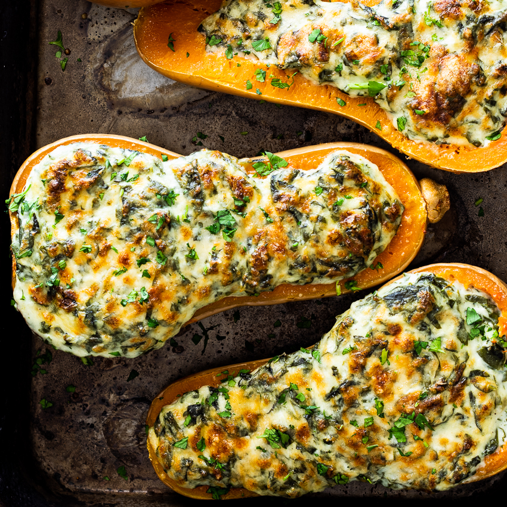

Stuffed Butternut Squash

Creamed spinach stuffed butternut squash
Cheesy creamed spinach stuffed into roasted butternut squash is a delicious,
crowd pleasing side dish or vegetarian main.
INGRIDIENTS:
- 2 butternut squash halved.
- 2 tsp salt.
- 1 cup boiling water.
For the creamed spinach
- 1 onion finely chopped.
- 2 garlic cloves crushed.
- 750 g (1½lbs) baby spinach washed.
- 2 tbsp flour.
- 1 cup milk.
- ½ cup cream.
- salt and pepper to taste.
- ½ cup mozzarella cheese grated.
- 4 tbsp grated Parmesan cheese.
INSTRUCTIONS
- Preheat the oven to 180°C/350°F.
- Place the halved butternut squash into a deep roasting pan then season with the salt.
- Pour the boiling water into the pan and cover with foil.
- Place in the oven and allow to roast for 30-45 minutes until soft.Once roasted, scoop
out the seeds and some of the flesh. Set aside.
- While the butternut is roasting, make the creamed spinach. Saute the onion and garlic in
2 tsp of olive oil until soft and translucent.
- Add the spinach and cook until wilted then add the flour and stir into the spinach.
Pour in the milk and stir until the sauce is smooth then add the cream.Allow to simmer
gently for 7-10 minutes or until the sauce is thick and smooth. Season to taste and
remove from the heat. Allow to cool for 10-15 minutes before adding the mozzarella cheese.
- Once the butternut is roasted, spoon the creamed spinach into the hollows of each butternut
and top with Parmesan cheese.
- Place back in the oven and allow to cook until the tops are golden brown, approximately 10 minutes.
- Remove from the oven and serve.